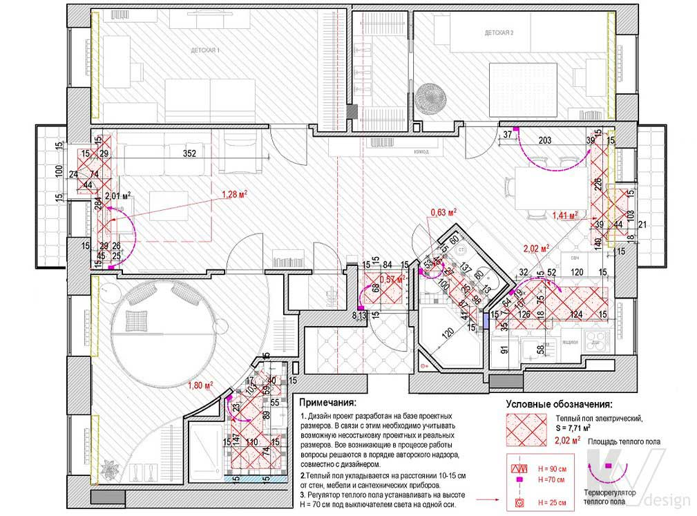

План размещения теплых полов

Теплі підлоги укладаються строго на відстані в 10-15 сантиметрів від стін, меблів і сантехнічних приладів, під керамічну плитку, камінь або керамограніт - ці матеріали мають прекрасну теплопровідністю, що дозволяє забезпечити максимальну функціональність готової конструкції. На кресленні вказується місце розташування і площа теплих підлог, дається прив'язка по стінах і обов'язково наводиться схема установки терморегуляторів.
Необхідно пам'ятати, що в багатоквартирних житлових будинках дозволено застосування тільки електричних моделей, тому план розміщення теплої підлоги в подібних випадках є невід'ємною складовою проекту з електропостачання. Для приватних будинків можливо також пристрій водяної теплої підлоги.